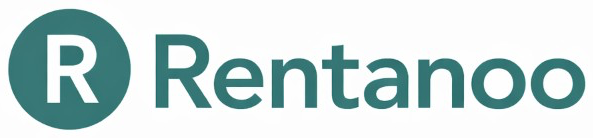

Positionnement
Je ne vends pas du « graphisme » ni un rôle de designer. Je déploie une couche visuelle orientée business qui renforce la crédibilité et la compréhension de votre offre — pour améliorer la conversion des prospects (site, réseaux, WhatsApp, publicité).
Ce que je réalise
- Logos et déclinaisons pour usage digital
- Identités visuelles simples et cohérentes (couleurs, typographies, règles)
- Publications réseaux sociaux (templates, séries, carrousels)
- Couvertures Facebook et visuels de page
- Bannières (site, email, ads)
- Affiches et supports de communication
- Visuels publicitaires (variantes A/B, formats)
- Vidéos promotionnelles courtes
- Reels et formats verticaux
- Shorts (capsules orientées conversion)
Pourquoi c'est important
Sur l'Océan Indien, l'écart ne se fait pas seulement sur le prix : il se fait sur la crédibilité. Une entreprise présentée de manière claire et professionnelle :
- augmente le taux de réponse aux messages et appels,
- réduit les frictions (« c'est sérieux ? », « c'est quoi exactement ? »),
- améliore la conversion des visites en demandes,
- renforce l'acquisition quand vous lancez la prospection.
Cette expertise renforce principalement l'objectif Générer plus de prospects, et se combine très bien avec l'automatisation commerciale IA (prospection + post-appel).
Réalisations en cours de publication
Cette section est volontairement évolutive : je publie progressivement des réalisations documentées (logos, supports, campagnes) sans surpromettre.
Rentanoo · identité + produit en production

Exemple de vitrine digitale crédible (catalogue + tunnel)
CTA
On démarre par un audit simple : où se situe la perte de conversion (offre, crédibilité visuelle, acquisition, parcours) — puis on priorise les supports à plus fort ROI.